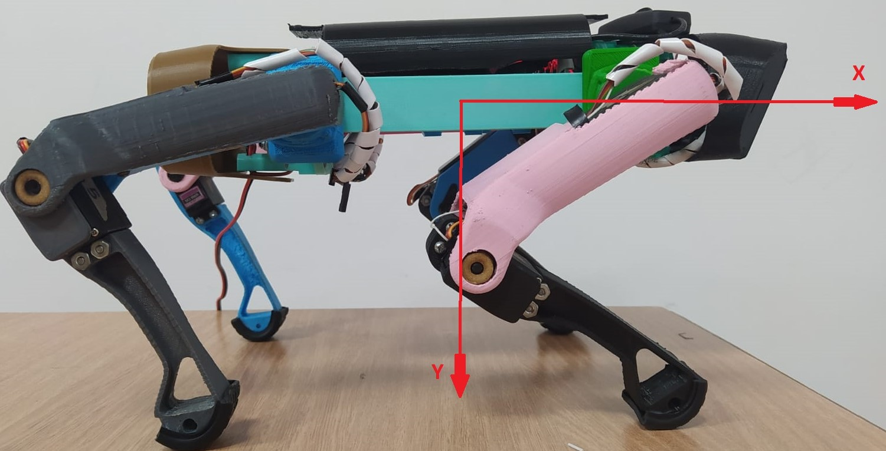

ResumenEn esta página web, encontrarás información detallada sobre nuestro proyecto de tesis desarrollado en el campo de la robótica móvil. Nos propusimos crear un dispositivo cuadrúpedo que permitiera explorar y estudiar estrategias de control, instrumentación, electrónica, diseño y programación. Este proyecto fue realizado como parte de nuestros estudios en la Universidad EIA y contó con la participación de los creadores: Juan Manuel Hincapie y Luis Alejandro Pérez.
Objetivos del proyecto
Diseñar y construir un dispositivo cuadrúpedo para la investigación en robótica móvil.
Explorar y estudiar estrategias de control aplicadas a la locomoción y manipulación del robot.
Investigar y desarrollar sistemas de instrumentación y electrónica para el funcionamiento del dispositivo.
Realizar la programación necesaria para el control y la interacción del robot con su entorno.
MetodologíaNuestro proyecto se llevó a cabo siguiendo una metodología rigurosa, que incluyó las siguientes etapas: investigación bibliográfica, diseño y prototipado, implementación de componentes electrónicos y sensores, desarrollo de algoritmos de control, pruebas y evaluación de desempeño.
ResultadosLos resultados obtenidos en este proyecto de investigación son de gran relevancia para el campo de la robótica móvil. Hemos logrado diseñar y construir un dispositivo cuadrúpedo funcional, capaz de realizar diferentes movimientos y tareas. Además, hemos explorado diversas estrategias de control y hemos desarrollado programas de software para la interacción con el entorno.

InsumosEn esta sección, encontrarás todos los recursos necesarios para construir y mejorar nuestro proyecto de robótica móvil. Ponemos a tu disposición los siguientes materiales: